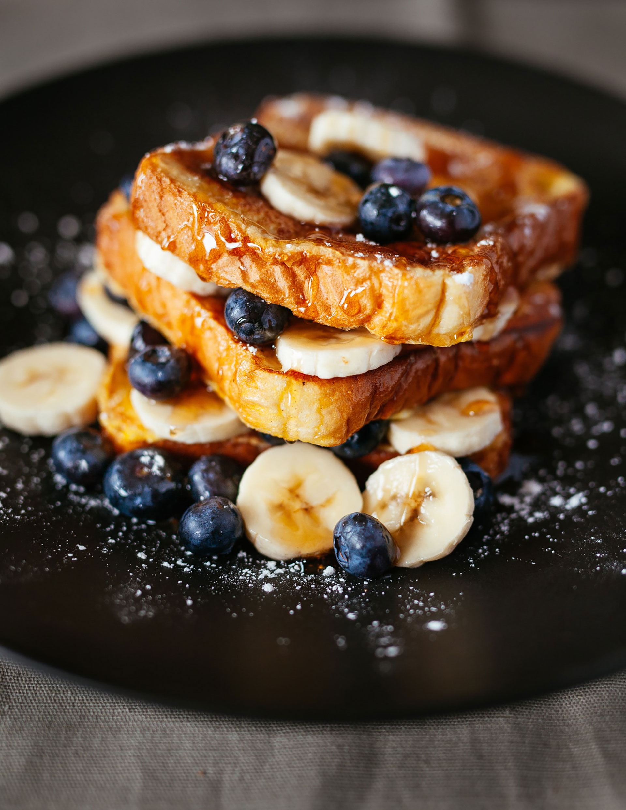
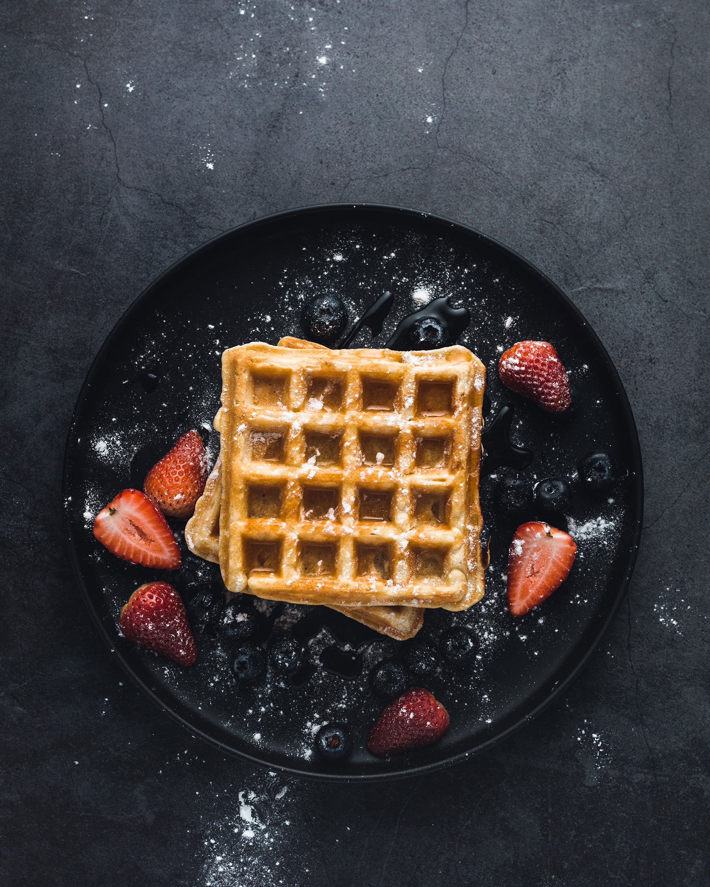
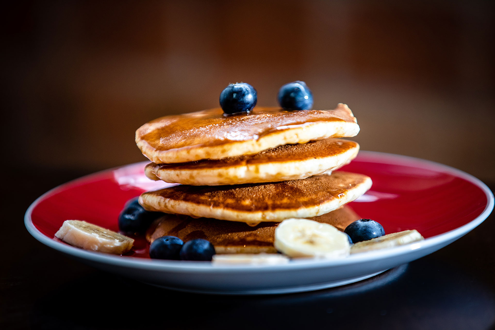

My Sweet Recipes
by Mireia Falgueras
There’s nothing like the joy that comes from begining your day with a sweet, homemade dish.
what if you’re, not super confident in the kitchen? Fear not, these dishes look like a professional made them, but are actually so easy to put together!
From cakes to bars to pies and even dessert dips, you’ll be able to master these recipes in no time. These recipes are game-changers.
Follow me on Instagram
French toasts
There are many, fancy variations on this basic recipe. This easy recipe works with many types of bread – white, whole wheat, brioche, cinnamon-raisin, Italian, or French.
This classic French Toast recipe is so delicious, easy to make and perfect for breakfast or brunch! Enjoy the BEST French toast in minutes with this recipe and helpful tips!
Serve hot with butter or margarine and maple syrup.

-
Difficulty:
low
-
Time:
10 minutes
-
Servings:
4 people
Ingredients
- Bread
- 2 Eggs
- Butter
- Maple syrup
- Blue berries
- Bananas
Preparation
- Whisk milk, eggs, vanilla, cinnamon, and salt together in a shallow bowl.
- Lightly butter a griddle and heat over medium-high heat.
- Dunk bread in the egg mixture, soaking both sides. Transfer to the hot skillet and cook until golden, 3 to 4 minutes per side. Serve hot.
Easy Waffles
Consider this your new, go-to waffle recipe when you want to start your day off on a sweet note. No fussy steps or unexpected ingredients are required here, which means you can whip these up whenever your cravings hit.

-
Difficulty:
low
-
Time:
30 minutes
-
Servings:
4 people
Ingredients
- 1 cup all-purpose flour, spooned and leveled
- 2 tablespoons sugar
- 1 teaspoon baking powder
- 1/4 teaspoon salt
- 1 cup milk
- 2 large eggs
- 4 tablespoons (1/2 stick) unsalted butter, melted
- Maple syrup and butter, as desired, for serving
Preparation
- Preheat waffle iron according to manufacturer's instructions. In a large bowl, whisk flour, sugar, baking powder, and salt; set aside.
- In a small bowl, whisk milk and eggs; pour over flour mixture, and whisk gently to combine (don't overmix). Gently whisk in butter.
- Following manufacturer's instructions, cook waffles until deep brown and crisp. (For a standard waffle iron, pour a generous 1/2 cup of batter into center, spreading to within 1/2 inch of edges, and close; waffle will cook in 2 to 3 minutes.) Serve warm, with maple syrup and butter, as desired.
Pancakes
There are many, fancy variations on this basic recipe. This easy recipe works with many types of bread – white, whole wheat, brioche, cinnamon-raisin, Italian, or French. Serve hot with butter or margarine and maple syrup.

Ingredients
- Bread
- 2 Eggs
- Butter
- Maple syrup
- Blue berries
- Bananas
Preparation
- Whisk milk, eggs, vanilla, cinnamon, and salt together in a shallow bowl.
- Lightly butter a griddle and heat over medium-high heat.
- Dunk bread in the egg mixture, soaking both sides. Transfer to the hot skillet and cook until golden, 3 to 4 minutes per side. Serve hot.